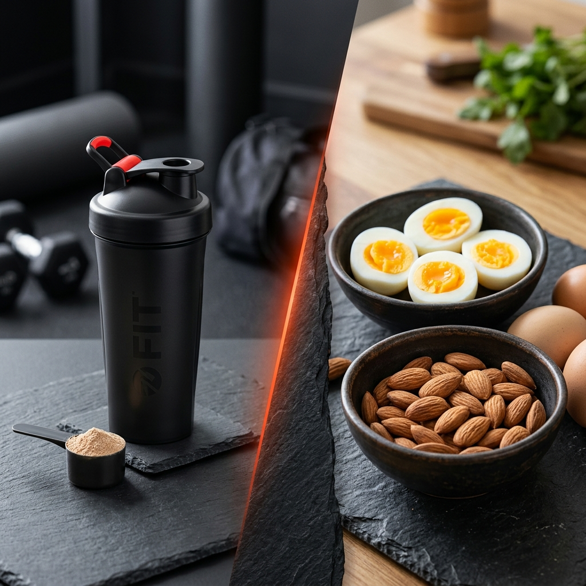

Mat vs Proteinpulver – en ärlig jämförelse

Tillskottsindustrin omsätter miljarder och marknadsföringen är aggressiv. Men behöver du egentligen proteinpulver för att nå dina mål? Och om du väljer pulver – vilken sorts? Här är en ärlig, reklamfri genomgång.
Pulvrets stora styrka: kostnadseffektivitet
Vassleprotein (whey) är en biprodukt av ostproduktion och är anmärkningsvärt billigt att tillverka per gram protein. Om du räknar PPK på ett bra vassleprotein kommer du att se att det rankas i absoluta toppen – ofta 4–6 gram protein per krona, mot 1–3 g/kr för vanlig mat. Det är svårt att slå i ren priseffektivitet.
Det är enkelt, snabbt och kräver ingen tillagning. För den aktiva person som har svårt att nå sitt proteinmål via mat är ett dagligt shake ett utmärkt och kosteffektivt komplement.
Vad riktig mat ger som pulver inte kan
Här är det viktigt att vara ärlig: ett proteinpulver är ett isolerat tillskott. Det ger protein och kanske lite vitaminer – men saknar den enorma matris av mikronäringsämnen som riktig mat innehåller:
- Kyckling: Protein + B3, B6, selen, fosfor
- Lax: Protein + omega-3, D-vitamin, B12, jod
- Ägg: Protein + kolin, D-vitamin, B12, lutein, zink
- Kvarg: Protein + kalcium, fosfor, probiotika
Dessutom mättar riktig mat bättre. Fast föda tar längre tid att smälta, vilket håller hungern borta längre. En shake är ofta förbrukad av kroppen inom 90 minuter.
Vassle, kasein, ärtprotein – vad är skillnaden?
- Vassle (whey): Snabbt upptagbart (~1–2 timmar). Bäst direkt efter träning eller som frukost. Fullvärdigt protein med högt DIAAS-score.
- Kasein: Långsamt upptagbart (~6–7 timmar). Bra som kvällsshake för att mata musklerna under natten. Också från mejerimjölk.
- Ärtprotein: Vegetabiliskt alternativ med relativt god aminosyraprofil. Lägre i metionin men ok i lysin. Bra för veganer i kombination med risbas.
- Soja: Fullvärdigt vegetabiliskt alternativ, jämförbart med vassle i aminosyraprofil. Vissa väljer bort det av hormonella skäl (fytoöstrogen) – men forskning stödjer generellt säker konsumtion i normala mängder.
Den praktiska strategin
En tumregel som fungerar för de flesta: låt 70–80% av ditt dagliga protein komma från riktig mat. Använd proteinpulver strategiskt för de tillfällen då mat inte är praktiskt – morgnar med lite tid, direkt efter träning, som mellanmål. Det ger dig det bästa av båda världar: god näringsstatus och kostnadseffektivitet.
Och om du letar efter de billigaste maträtterna för att nå dina mål? Det är precis vad PPK-kalkylatorn är till för.
Jämför matens PPK mot ditt proteinpulver just nu: Öppna PPK-kalkylatorn →